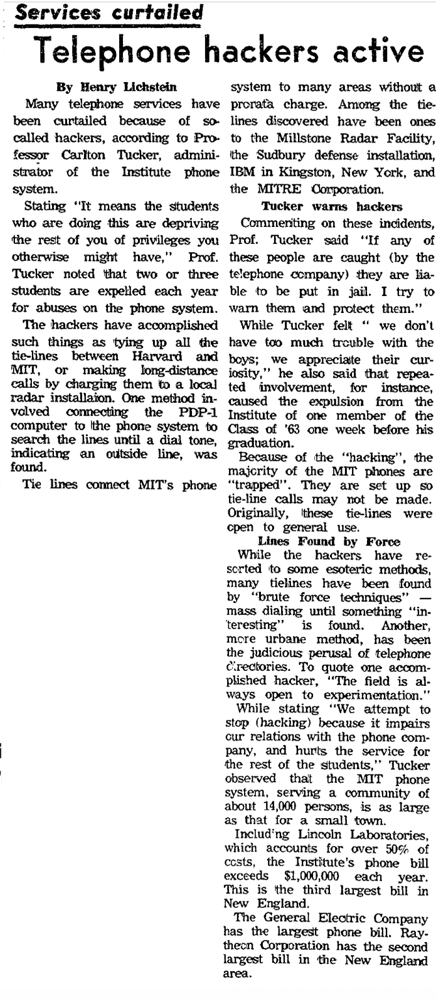
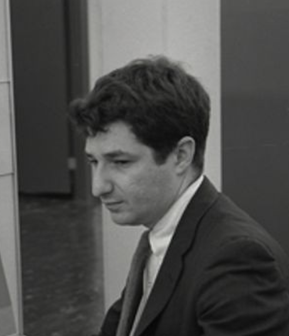

The people of Spacewar!
Spacewar! has no single author. It was conceived by a small group, built by a larger one, extended over 1963 by hands not all of whom can now be named, and recovered decades later by emulators and archivists. Reading the code is also reading a collaboration, so this page sets down who did what, as far as the record allows. It is a work in progress, and some of its gaps, like the unidentified "dfw", are themselves part of the story.
Many of these people were first carried to a general public in Stewart Brand's 1972 Rolling Stone dispatch from the Spacewar scene, "Spacewar: Fanatic Life and Symbolic Death Among the Computer Bums". Brand found in the hackers "a mobile new-found elite, with its own apparat, language and character," and opened with a line that has outlived the machine: "Ready or not, computers are coming to the people."
Spacewar! carries a credit paragraph that, by the authors' wish, must accompany every distributed copy: "Spacewar! was conceived in 1961 by Martin Graetz, Stephen Russell, and Wayne Wiitanen. It was first realized on the PDP-1 in 1962 by Stephen Russell, Peter Samson, Dan Edwards, and Martin Graetz, together with Alan Kotok, Steve Piner, and Robert A Saunders."
The PDP-1 the game was written on stood in the "kluge room" on the second floor of Building 26 at MIT, the home of the Research Laboratory of Electronics and, before the PDP-1 arrived in 1961, of the TX-0 on which the first hackers had learned the machine. The Hingham Institute where the idea was hatched was a barely habitable tenement at 8 Hingham Street in Cambridge, and the computer itself had been donated by DEC, the young Digital Equipment Corporation, from the old woollen mill it occupied in Maynard, Massachusetts.


Most of the people who built Spacewar! came out of a single student society, the Tech Model Railroad Club, and in particular its Signals and Power Subcommittee, the members who cared less for the trains on top of the layout than for the relays and switches beneath it. The club met in room 20E-214, on the third floor of Building 20, the temporary wartime structure known as the "Plywood Palace," demolished in 1998; the machines they hacked, the TX-0 and then the PDP-1, sat elsewhere on campus, in Building 26. In that clubroom, and in the slang and habits its members carried to the machines, the word "hack" took on its honorific sense and the first hacker culture took shape, including the conviction, later a hacker watchword, that "information wants to be free," an idea credited to club members Peter Samson and Jack Dennis. Samson, Kotok, Saunders, and Piner were all of the club, as were others who circled the machine without a credit on the game, among them Bob Wagner.

The club's slang, including the honorific sense of "hack", was catalogued by Peter Samson in the TMRC Dictionary, archived here from the originals: 1959 and 1960 (originals at gricer.com/tmrc).

Steve Russell (b. 1937) "SLUG"
Wrote the first working version of Spacewar!. The nickname "Slug" caught a habit of being slow to start a job, which is exactly what John McCarthy had run into earlier. As McCarthy's assistant he had already done something just as consequential: in 1958 to 1959 he hand-coded McCarthy's theoretical eval function into IBM 704 machine code, producing the first Lisp interpreter. McCarthy had meant eval only as theory, "intended for reading, not for computing," and told Russell he was "confusing theory with practice"; Russell, by McCarthy's own later account, "went ahead and did it," and in a matter of weeks Lisp had become a running, and more powerful, language than its author intended. Russell returned briefly to MIT in 1962 to consolidate the scattered patches into version 3.1. Smithsonian oral history, 2017 ›

Martin Graetz "SHAG"
Known as "Shag" for his fondness for shaggy-dog stories, he co-conceived the game in 1961 and wrote its hyperspace routine, the panic button that flings a ship out of danger and back at random. He presented a paper on the game, "Real-Time Capabilities of the PDP-1," to the first meeting of the DEC users' group, DECUS, in 1962. His later memoir, "The Origin of Spacewar" (Creative Computing, August 1981), is the principal first-hand account of how the game came to be, and the source for much of this page. Smithsonian oral history, 2018 ›
Wayne Wiitanen
Co-conceived Spacewar! with Russell and Graetz in 1961, the three of them styling themselves the Hingham Institute Study Group on Space Warfare, after the barely habitable Hingham Street tenement where they met. A mathematician, mountain climber, and early music buff in Graetz's description, it was Wiitanen who set the terms of the idea, spaceships flown in a contest of skill, before a line of it was written. A US Army reservist, he was called to active duty in the Berlin crisis of late 1961, before the coding began, so the man who framed the game had no hand in its writing. Smithsonian oral history, 2018 ›

Peter Samson (b. 1941) "PRS"
Wrote the Expensive Planetarium (1962), the accurate scrolling star map drawn from the American Ephemeris and Nautical Almanac down to the faintest stars the eye can see, and the PDP-1 music compiler besides. Later, at Project MAC, he carried the game onto the PDP-10. Years later he gave the on-screen score display of version 4.8 its final form. A central figure of the Tech Model Railroad Club. Smithsonian oral history, 2017 ›

Dan Edwards (b. 1937, d. 2025)
In 1962 wrote the central star and its gravity, the physics that turned a shooting match into a contest of orbits, and the outline compiler that drew the two ships efficiently enough to leave the machine time for everything else. When there were no cycles to spare for gravity to act on the torpedoes as well, the team simply declared them photon torpedoes, immune to gravity by fiat, a hardware limit folded into the game's fiction. He also wrote the garbage collector for Lisp 1.5 and is a named author of the Lisp 1.5 Programmer's Manual (1962), a second deep tie between Spacewar! and the birth of AI at MIT. Smithsonian oral history, 2018 ›

Alan Kotok (b. 1941, d. 2006)
With Saunders, built the hand control boxes in 1962, arguably the first gamepads, so that players could fight without hunching over the console switches. He also fetched the sine and cosine routines from DEC that removed the last obstacle to the gravity calculation. A TMRC hacker, later a noted DEC engineer.
Bob Saunders
Robert A. Saunders. The control boxes for two-handed play, two lever switches and two push buttons, were an early piece of game-controller design, built in 1962. By his own later account he designed and built them single-handed, in an evening, from telephone gear scavenged from AT&T's castoffs, changing a single instruction in the program so it read the boxes instead of the console sense switches. The credit for the controller usually pairs him with Kotok, though the accounts do not agree: Graetz later recalled Jack Dennis crediting his own TX-0 engineers with building the boxes. A member of the Tech Model Railroad Club. Smithsonian oral history, 2018 ›
Steve Piner
One of the names in the credit paragraph that accompanies the game (quoted above), listed among those who first realised it in 1962, though the record does not say precisely what his hand in it was. A TMRC hacker, on the same PDP-1 he wrote the Expensive Typewriter (1961), one of the first text editors, the program on which Graetz's later account and much else was typed. Smithsonian oral history, 2018 ›
Monty Preonas "DDP"
Drove the 4.x line over 1963. He rewrote the gravity for the PDP-1's new hardware multiply and divide option (version 4.0), wrote the first on-screen score display, and built the subjective dual-console view of versions 4.3 and 4.4, giving each player a cockpit view of their own ship, an experiment in first-person perspective roughly a decade before the form is usually dated.
Joe Morris
Worked on the 4.x line alongside Preonas and appears to have edited version 4.4 in 1963. In 2005 his surviving paper listings and his recollections, posted to a PDP-1 discussion list, became key evidence for dating and attributing the 4.x versions, including the limits of what memory could supply.
"dfw" UNIDENTIFIED
The initials "dfw" sign versions 4.1 and 4.8, the last and most polished MIT version, yet they belong to no one anyone can name. Asked in 2005, neither Steve Russell nor Joe Morris could place the initials. A principal author of the founding video game, dropped by the record to three letters. Why this gap matters ›
Barry Silverman, Brian Silverman, and Vadim Gerasimov (b. 1969)
Built in 2006, with Steve Russell, the in-browser PDP-1 emulator that this site runs and that underlies most modern Spacewar! emulation. Their work is what lets the reading move between the listing and the running game.
Norbert Landsteiner
Through masswerk.at, has emulated, reconstructed, and analysed the surviving versions and patches in extraordinary detail. The variorum on this site draws on his work throughout, and tries to extend it from collection toward critical reading.
Al Kossow
Through bitsavers.org, scanned and preserved the original PDP-1 paper tapes and source listings, the authentic artefacts behind every reconstruction.
A few figures stand just outside the credit but inside the story: the professor who gave the hackers their machines, and, in the same building, the two men imagining what such machines might one day think.

Jack Dennis (b. 1931, d. 2026)
A Tech Model Railroad Club member who became MIT faculty, Dennis is the man who let the hackers in. He brought the Signals and Power crowd to the TX-0, hired the best of them as its systems programmers, and wrote, largely single-handed, the time-sharing system for the PDP-1 on which Spacewar! grew. If anyone opened the machines to the people who wrote the game, it was him.

John McCarthy (b. 1927, d. 2011)
Invented Lisp (1958) and led MIT's early artificial-intelligence work. He employed Russell as his assistant, and it was his theoretical eval that Russell turned into a running interpreter. The line from Spacewar! to symbolic AI runs through him.

Marvin Minsky (b. 1927, d. 2016)
A founder of artificial intelligence at MIT. His display hack, the Minskytron (1962), drew hypnotic curves on the same Type 30 tube and gave the hyperspace warp its distinctive look, the "Minskytron signature."

Ed Fredkin (b. 1934, d. 2023)
Not a Spacewar! author, but central to the machine it ran on. At Bolt Beranek and Newman, which bought DEC's very first PDP-1, Fredkin specified the machine's character set, character codes and I/O, and designed the zero-latency swapping drum that made PDP-1 time-sharing possible; he also wrote its assembler, FRAP. A close friend of Minsky and McCarthy, he later directed MIT's Project MAC (1971–74), and devised TRIE memory and the reversible Fredkin gate (Wikipedia). More on the machine ›

The PDP-1 was built by Digital Equipment Corporation, founded in a corner of a Maynard woolen mill in 1957. Women were not rare there: of the first hundred employees, thirty-six were women, many of them former mill workers who now assembled the circuit boards. Alma Pontz (employee #5) was the first woman hired; Gloria Porrazzo (#6) ran the module assembly line, whose fifty-odd workers were known as "Gloria's Girls"; Angela Cossette, hired in 1963 to run the DEC Users' Society (DECUS), became the company's first woman manager.

Barbera Stephenson (employee #71)
An MIT electrical-engineering graduate, hired by Ken Olsen in 1960 as Digital's first woman engineer. She wrote the first DEC module handbooks, the do-it-yourself manuals that taught customers digital logic, testing the prose by "teaching Boolean algebra to all the secretaries," and later the Analog-to-Digital Conversion handbook and the Digital Logic Laboratory Workbook, whose final exercise was to "build your own mini-computer" (1965). As an applications engineer she supported the early PDP-1 installations in person. Customers balked: "I'd say 'I'm an engineer' and they'd say, 'No, I want to speak with a real engineer.'" Sources: her DEC oral history and David A. Mark, "Women at Digital Equipment Corporation" (2014).
Gender and Spacewar
As Nooney argues, gender in early computing worked as an infrastructure: it shaped who had access to a PDP-1 at two in the morning, whose presence in the machine room read as "hacking" and whose did not, and so whose work the record kept. The point is sharpened by proximity. Two buildings away, in these same years, two women were doing foundational scientific computation for the meteorologist Edward Lorenz (b. 1917, d. 2008): Margaret Hamilton (b. 1936), who would go on to lead the Apollo flight software, and then, when Hamilton moved on in 1961, Ellen Fetter (b. 1940), a Mount Holyoke mathematics graduate whose runs traced out what became the Lorenz attractor, the founding image of chaos theory. Their machine was not the PDP-1 but a Royal McBee LGP-30, an 800-pound machine with its own office on the fifth floor of Building 24. Further out, at Lincoln Laboratory, Mary Allen Wilkes (b. 1937) was programming the LINC. And one woman was closer than any corridor: Marge French, who did what one history calls "non-hacking computer work" for a research project in this very milieu and who married one of the authors, Bob Saunders. She survives in the record chiefly as a hacker's wife. Women were doing foundational work on interactive machines at MIT in these same years, close enough to be down a corridor, and the room that wrote the game stayed shut to them anyway. More on this ›
Read the code, trace the source
The versions and their differences are set out on the Code page; the project itself is on the front page.
The versions The project